| Contents |
| Getting Started |
Before you can run JMStudio, you must have JMF 2.1.1b installed. For information about setting up JMF, see the Setup pages.
java JMStudioIf you run JMStudio directly, both the JMF 2.1.1b classes and the JMStudio classes must be in your classpath.
When JMStudio is launched, just the menu is visible:
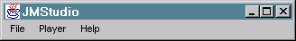
| File | Open File | Ctrl+O | Opens a file for playback. |
| File | Open URL | Ctrl+U | Opens a URL or MediaLocator for playback. |
| File | Open RTP Session | Ctrl+R | Opens an RTP receive/playback session. |
| File | Capture Preview | Ctrl+P | Enables you to monitor media data as it is captured. |
| File | Capture Controls | Enables you to control capture parameters. | |
| File | Save As | Ctrl+A | Opens a dialog from which you can transcode and save media data. |
| File | Transmit | Ctrl+T | Opens a dialog from which you can transmit media data over the network. |
| File | Close Player | Ctrl+W | Closes the current Player or Processor. |
| File | Visited URLs | Opens a menu from which you can select a URL from a list of URLs recently accessed by JMStudio. | |
| File | New Window | Ctrl+N | Launches a new instance of the JMStudio application. |
| File | Plug-In Viewer | Ctrl+V | Opens a window that displays the media processing flow. |
| File | Exit | Terminates the application. | |
| Player | Auto Play | Toggles the auto play state of the current Player or Processor. When auto play is enabled, the player begins presenting the media stream automatically. | |
| Player | Auto Loop | Toggles the auto loop state of the current Player or Processor. When auto loop is enabled, the player automatically replays the media stream when the end of media is reached. | |
| Player | Maintain Aspect Ratio | Maintains the aspect ratio of the video window when the JMStudio window is resized. | |
| Player | Full Screen | Ctrl+F | Expands the JMStudio window to fill the entire screen. Click anywhere to restore the JMStudio window to its original size. |
| Player | Snap Shot | Ctrl+S | Takes a snap shot of the current video frame being displayed. |
| Help | About JMStudio | Ctrl+H | Displays an about box that contains the version number and copyright information for JMStudio. |
| Playing Media Data with JMStudio |
JMStudio lets you play media streams from a variety of sources--files, URLs, or RTP transmissions.
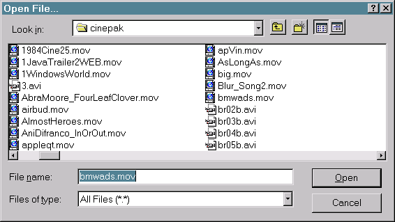
A JMF Player for the selected file is created. If Auto Play is enabled, the player is started and presentation of the selected media file begins automatically.
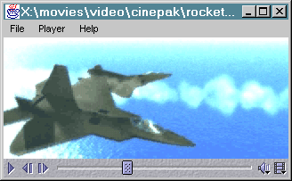
If the format of the file is not supported by JMF, an error message is displayed.
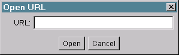
If the URL exists, and its format is
supported by JMF, a JMF Player for this URL is created and started. If
the URL cannot be found or the format is not supported by JMF, an error
message is displayed. Supported protocols for the JMF 2.1.1b implementation
include HTTP, FTP, and FILE.
The Open URL command is also used to capture media data. For more information, see Capturing Media Data with JMStudio.
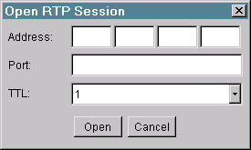
The format of an RTP Media Locator is: rtp://address:port[:ssrc]/content-type/[ttl] where:
| address | The IP address of the RTP session |
| port | The port of the RTP session. |
| ssrc | SSRC Identifier of the source from which data is to be received. If ssrc is not specified, the first stream detected by the RTP Session Manager will be selected as a stream for the DataSource. |
| ttl | Time to Live of the RTP session. |
| content-type | A string defining the data content type. e.g. video, audio, motion, text, etc. The RTP media handler (Player) will be created for this specific media type. |
For more information about sending and receiving RTP streams with JMF 2.1.1b, see "Receiving and Presenting RTP Media Streams" in the Java Media Framework API guide.
While media data is being played, the following controls are available:
| Play | Starts presentation of the media data. If the presentation was paused, playback resumes from the point at which it was paused. |
| Pause | Pauses presentation of the media data. The Play button will resume playback from the point at which it was paused. |
| Step Back / Forward | Steps back or forward by one frame. If either button is kept pressed, the action automatically repeats at the rate of two frames per second. |
| Seek | Sets the media to a new playback position. You seek by dragging the Seek slider or clicking within the Seek bar. When the media is playing, the seek does not take effect until the mouse button is released. When the media is paused, dragging the Seek slider will cause the video to be continually updated. |
| Mute | Mutes the audio. The presentation (including video, if applicable) continues while the audio is muted. Clicking the Mute button mutes the audio, clicking it again resumes normal audio playback. |
| Volume | Right-clicking on the Mute button pops up a volume slider. This sets the volume level. You can drag the volume slider to increase or decrease the volume. Dragging to the right increases the volume. In some situations, the volume slider is unavailable. |
| Information | Displays the media properties, which contains information about the media being played, including the JMF version, URL name, duration, bit rate, video encoding, window size, frame rate, audio encoding, and audio quality. |
| Zoom | Right-clicking on the video window displays a menu from which you can set the image scale. Available options are 1:2 (half size), 1:1 (normal size), 2:1 (double size) and 4:1 (quadruple size). |
| Rate | Right-clicking on the Information button displays a menu from which you can set the media playback rate. The rate can be set to any value from 1/4 of the normal speed up to 8 times the normal speed. |
| Auto Loop | Enabling Auto Loop in the Player menu causes the media to play continuously, restarting each time it reaches the end of the media. Selecting the auto replay option repeatedly toggles the replay setting on and off. |
| Saving a Media Stream to a File |
JMStudio enables you to transcode a media stream and write it to a file. Transcoding is the process of converting a media stream or some of its tracks from one media format to another. To transcode and save a media file, URL, or captured media stream with JMStudio:
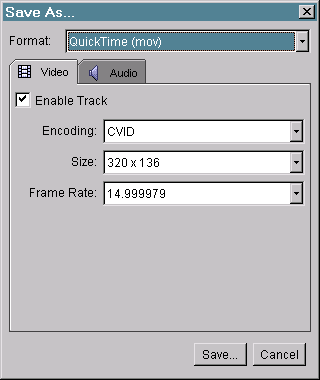
| Transmitting a Media Stream |
You can use the JMStudio Transmit command to transcode a media stream and transmit it across the network using RTP.
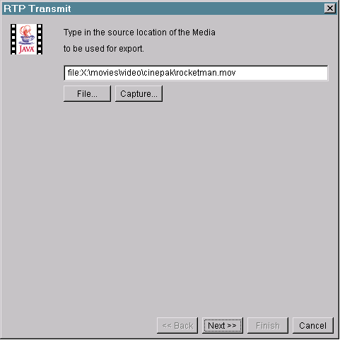
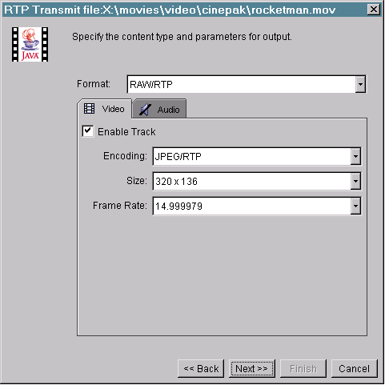
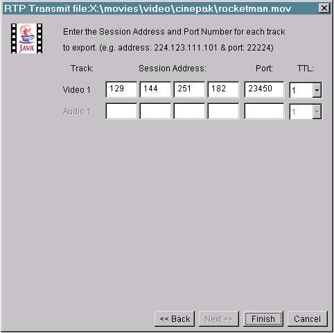
| Capturing Media Data |
JMF supports media capture through special DataSources called Capture
DataSources. To capture media with JMStudio:
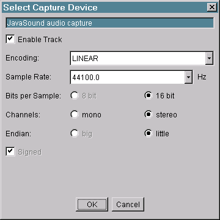
| Using the Plug-In Viewer |
The JMStudio includes a viewer that displays a graphical overview of a Processor's tracks and plug-ins. This graph enables you to monitor of the media flow during playback, capturing, or transcoding.
To open the Plug-In Viewer for the media currently being presented, select Plug-In Viewer from the File menu. This opens the Plug-In Viewer window, which displays the plug-ins currently loaded and the connections between them:
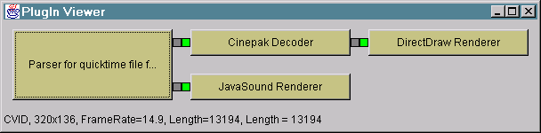
To open the Plug-In Viewer for a transcoding processor:
To view the parameters of the Buffers that are passed between the plug-ins, position the mouse over the small boxes to the left or to the right of the plug-in. The Buffer parameters, including format and length, are displayed at the bottom of the Plug-In Viewer window.